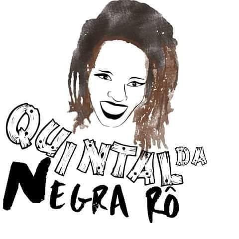

O Centro Cultural Oca dos Curumins, teve suas atividades iniciadas em abril do ano de 1977,focadas em educação.Hoje em dia trabalhamos com educação, cultura, esporte, artesanato e atendimento às famílias em busca de auxílio seja na área jurídica ou não.


ATIVIDADES
- Alfabetização
 Reforço Escolar
Reforço Escolar Aulas de inglês
Aulas de inglês- Palestras
- Artesanato
- Teatro
 Dança
Dança- Capoeira
IMPACTO
Com uma equipe composta apenas por voluntários conseguimos atender uma média de 60 pessoas em nossas atividades. Esse impacto pode ser ainda maior com a sua colaboração.!

PARCEIROS

- 


Assossiação de Moradores do Morro do Itararé
Hashi Dourado
CONTATO
(21)98854-1893 (21)3071-6750
tiabete2008@gmail.com betes_aparecida@hotmail.com ccocococadoscurumins@hotmail.com
Estrada do Itararé, 480 fundos Travessa São José, 13
Avenida Itaóca, 2353 fundo B(anexo)